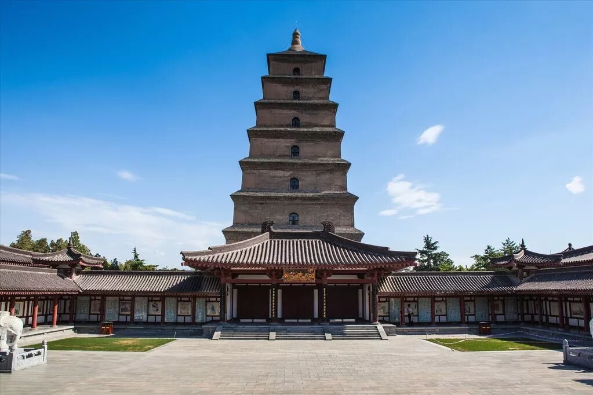
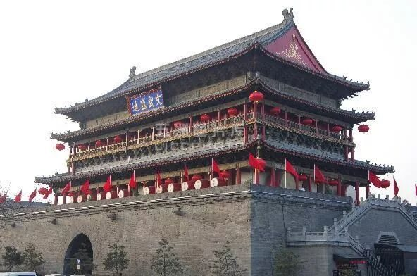
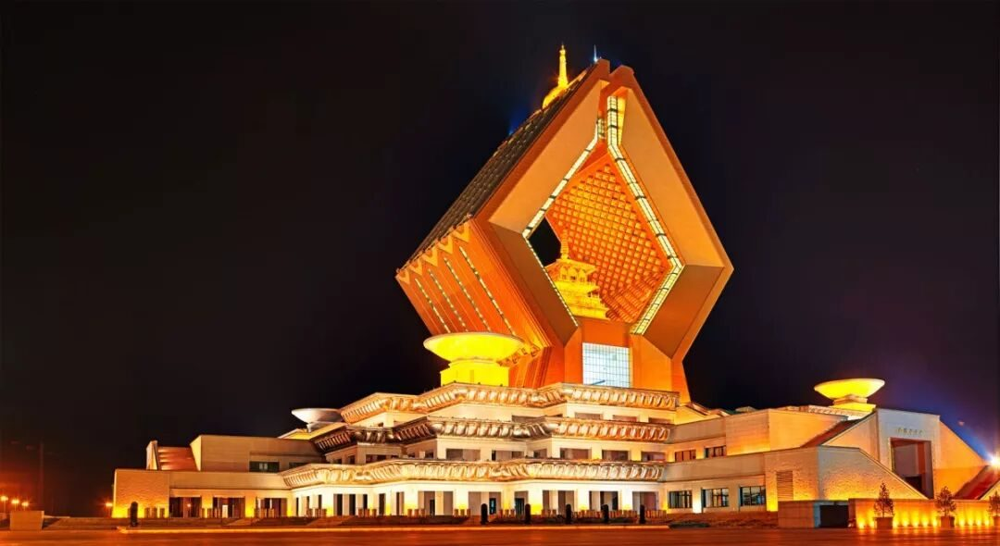
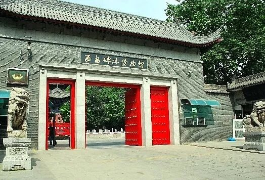
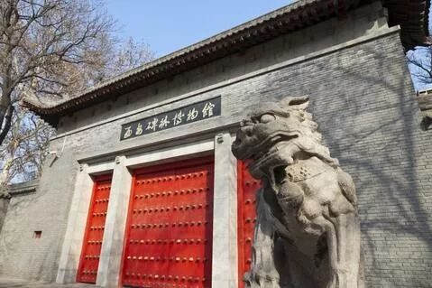

【行者无疆——谈笑数遗风】

”行者无疆 韶忆长安“
地点介绍篇（二）

于时光的荡涤中，追逐历史的起落
每一次探访
都如同拜访一位满面风尘的老者
且停住，听他呢喃的痴语
不能亲历，也可倾听
新的篇章即将开启
有些地方有些故事
行者想要和你诉说……
鼓楼与钟楼是姊妹楼，鼓楼始建于明洪武十三年，清康熙三十八年和清乾隆五年先后两次重修。楼上原有巨鼓一面，每日击鼓报时，故称“鼓楼”。鼓楼有南北两块匾额，相传南匾“文武盛地”为陕西巡抚张楷，模仿乾隆皇帝的“御笔”为鼓楼书写；北匾“声闻于天”则为咸宁学士李允宽所书。


大雁塔
大雁塔，最初是为供奉玄奘法师从天竺带回的佛像、舍利和梵文经典，而建的五层砖塔，属因寺建塔，所以又名“慈恩寺塔”，是现存最早、规模最大的唐代四方楼阁式砖塔，历经四次修建，现存七层塔身，是西安1300多年的地标性建筑。唐中宗神龙年间，进士张莒游慈恩寺，在大雁塔下题名，文人效仿，逐渐成为新科进士曲江聚会饮酒，在慈恩塔提笔留名的风俗，这成为后来流传的“曲江流饮”和“雁塔题名”。

法门寺又名“真身宝塔”，据传始建于东汉明帝十一年，素有“关中塔庙始祖”之称。原为供奉舍利而置塔，木塔4层，塔下设有地宫，地宫中存放着用紫檀香木做成的棺椁，内以金瓶盛放佛祖指骨舍利。木塔名叫“真身舍利宝塔”，又因塔而建寺，便有了今日的法门寺。




历史的进程永无休止，不可预测，在起伏沉落中，勾起歌咏诗篇；古物与遗迹是最好的馈赠，是一点一滴细细刻录的千载时光。

图片丨行者无疆实践团
文字丨潘雯雯
责编丨牛直达
审核丨邓子孚 潘雯雯
行者无疆实践团
QQ：2758025831
随行者一起认识世界
长按二维码关注